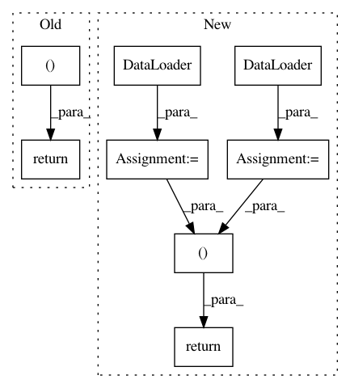

d192ef06119f3eccf569a844b30976db99cfa0f6,python/ray/util/sgd/torch/examples/train_example.py,,data_creator,#Any#,56
Before Change
def data_creator(config):
Returns training dataloader, validation dataloader.
return LinearDataset(2, 5), LinearDataset(2, 5, size=400)
def train_example(num_replicas=1, use_gpu=False):
trainer1 = TorchTrainer(
After Change
Returns training dataloader, validation dataloader.
train_dataset = LinearDataset(2, 5, size=config.get("data_size", 1000))
val_dataset = LinearDataset(2, 5, size=config.get("val_size", 400))
train_loader = torch.utils.data.DataLoader(
train_dataset,
batch_size=config.get("batch_size", 32),
)
validation_loader = torch.utils.data.DataLoader(
val_dataset,
batch_size=config.get("batch_size", 32))
return train_loader, validation_loader
def train_example(num_workers=1, use_gpu=False):
trainer1 = TorchTrainer(
In pattern: SUPERPATTERN
Frequency: 3
Non-data size: 8
Instances
Project Name: ray-project/ray
Commit Name: d192ef06119f3eccf569a844b30976db99cfa0f6
Time: 2020-03-10
Author: rliaw@berkeley.edu
File Name: python/ray/util/sgd/torch/examples/train_example.py
Class Name:
Method Name: data_creator
Project Name: ray-project/ray
Commit Name: d192ef06119f3eccf569a844b30976db99cfa0f6
Time: 2020-03-10
Author: rliaw@berkeley.edu
File Name: python/ray/util/sgd/torch/examples/cifar_pytorch_example.py
Class Name:
Method Name: cifar_creator
Project Name: ray-project/ray
Commit Name: d192ef06119f3eccf569a844b30976db99cfa0f6
Time: 2020-03-10
Author: rliaw@berkeley.edu
File Name: python/ray/util/sgd/torch/examples/tune_example.py
Class Name:
Method Name: data_creator